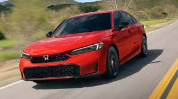
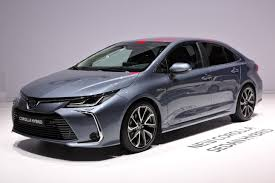
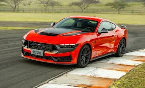

O Honda Civic é um dos sedãs mais conhecidos do mercado. O modelo se destaca pelo conforto, economia e visual moderno.
As versões mais recentes possuem motor turbo, central multimídia e diversos itens de segurança.

O Toyota Corolla é conhecido pela confiabilidade, conforto interno e baixo consumo de combustível.
O carro possui design elegante, tecnologia moderna e ótimo desempenho para o dia a dia.

O Ford Mustang é um esportivo famoso pelo motor potente e pelo design agressivo.
O modelo oferece alta performance, câmbio automático e tecnologias modernas de direção.
